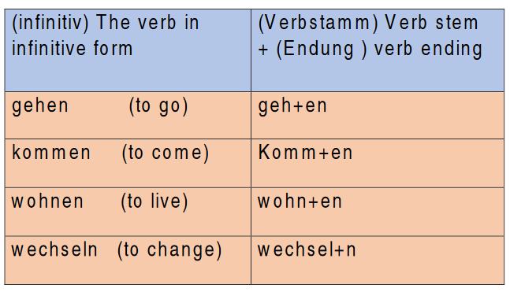

The verb - Das Verb
What is a verb?
Verbs are words that shows what a person or any other subject is doing:
'Er spielt Fußball.' (He plays football)
'Ich lese ein Buch.' (I read a book)
It can also show a state: 'Sie ist traurig.' (She is sad)
- In German we have the full form of the verb which is called 'infinitiv' (infinitive).
- Most of infinitive verbs end in '-en' as in 'gehen' (to go), 'kommen' (to come). Some other verbs end in '-eln' as in 'handelen' (to act), 'wechselen' (to change).
Beispiel (example):
The verb stem is the infinitive
form without -en or -n.
